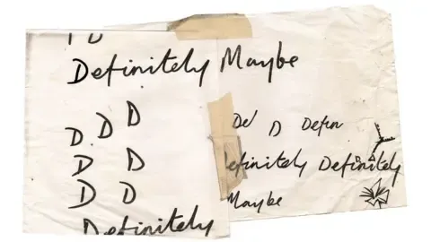
Definitely Maybe fue el álbum debut de la banda, lanzado el 29 de agosto de 1994 por Creation Records.
Definitely Maybe
El álbum consta de 11 canciones, todas escritas por Noel Gallagher. Fue un éxito entre los críticos, con elogios por su sonido potente y sus letras ingeniosas.
El álbum ayudó a lanzar la carrera de Oasis como una de las bandas más importantes del mundo. El álbum fue también uno de los impulsores de la segunda onda británica e hizo de Oasis los líderes de este movimiento musical.
Definitely Maybe es considerado uno de los álbumes más importantes e influyentes de los noventa.
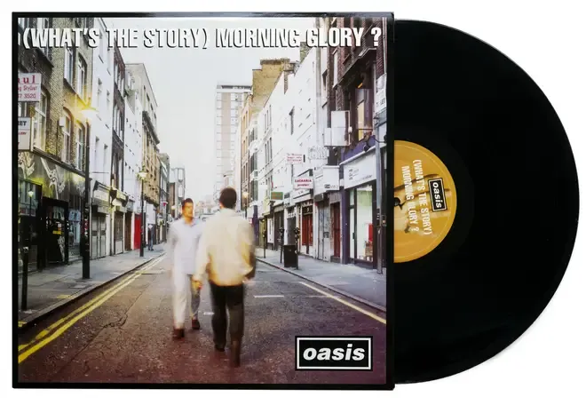
(What’s the Story) Morning Glory? es el segundo álbum de estudio de la banda, lanzado el 2 de octubre de 1995 por Creation Records.
(What´s the Story) Morning Glory)
El álbum consta de canciones escritas por Noel Gallagher. Muestra un importante avance en el sonido, la producción y en la complejidad de las canciones respecto al “Definitely Maybe”.
El álbum ayudó a cimentar a Oasis como la banda más importante de la segunda onda británica y una de las bandas más populares e importantes de la época en general.
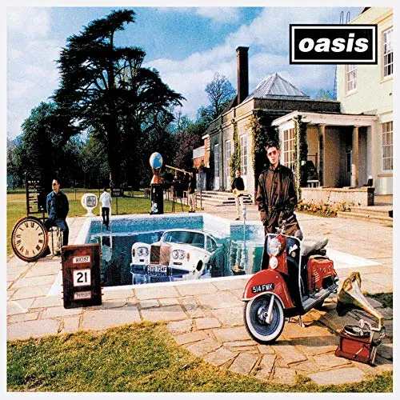 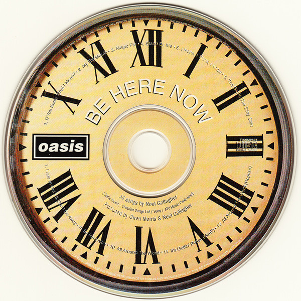
Be Here Now fue el tercer álbum de estudio, lanzado el 21 de agosto de 1997 por Creation Records.
Be Here Now
El álbum fue criticado por su exceso de producción y sus letras a menudo vagas, pretenciosas y sin sentido.
Muchos críticos acusaron a Noel Gallagher de intentar crear un álbum “épico” que rivalizara con los grandes álbumes de rock de los años 70.
Be Here Now es un álbum complejo y controvertido. Es un álbum que ha sido amado por muchos y odiado por otros. El álbum es un testimonio del talento de Oasis, pero también es un testimonio de los peligros de la ambición y la fama.
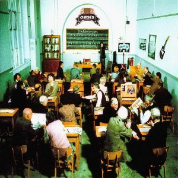 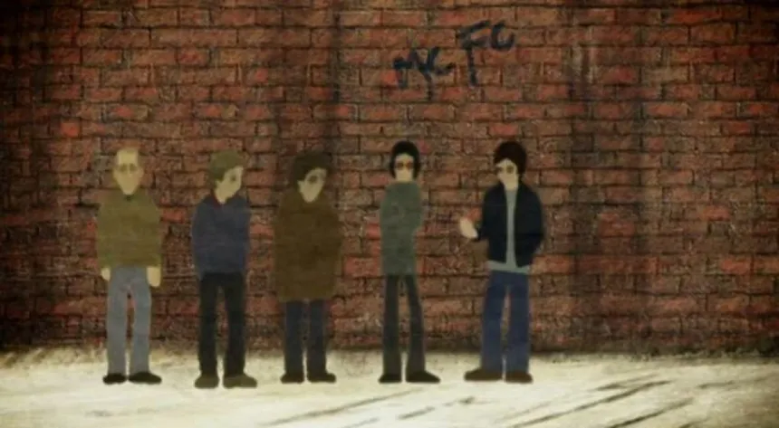
The Masterplan es un álbum recopilatorio de lados B de la banda, lanzado el 2 de noviembre de 1998 por Creation Records.
The Masterplan
Oasis siempre se destacó por su excepcional calidad de lados B y esta recopilación es testimonio de ello.
El álbum consta de 14 canciones, todas excepto un cover de “I Am the Walrus” de los Beatles fueron escritas por Noel Gallagher.
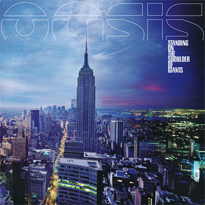 Standing on the Shoulder of Giants es el cuarto álbum de estudio. Fue lanzado el 28 de febrero de 2000 por Big Brother Recordings.
Standing on the Shoulder of Giants
El álbum consta de 11 canciones, 10 de ellas escritas por Noel Gallagher.
“Little James” siendo la excepción, ya que fue escrita por Liam, la primera contribución del hermano menor Gallagher a la discografía de Oasis.
El álbum tuvo reacciones mixtas entre la crítica, algunos elogiaron su sonido experimental
y enfoque más maduro mientras que otros criticaron lo sombrío y la desigualdad en la calidad de las canciones.
El álbum también marcó el comienzo de una nueva era para Oasis.
La banda se había separado de su mánager Alan McGee y había firmado un nuevo contrato discográfico con Big Brother Recordings.
El álbum también fue el primero en que la banda trabajó con el productor Mark “Spike” Stent.
 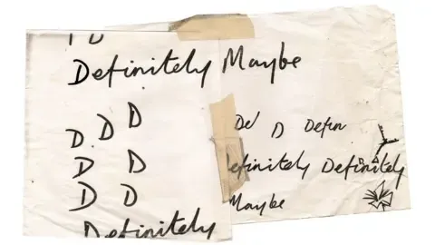
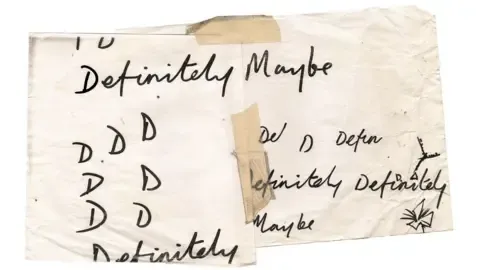
 Morning Glory_1364.jpg) 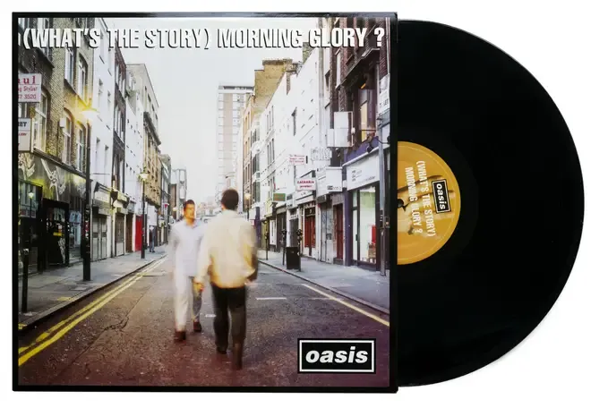
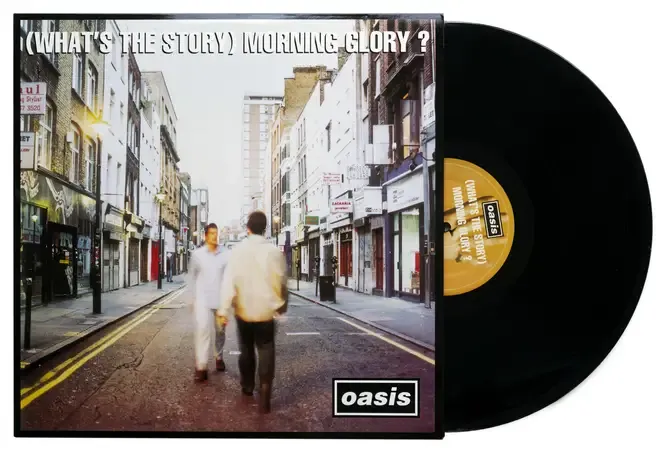